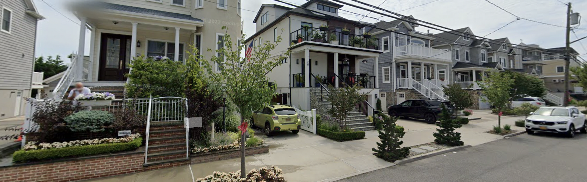

Queens, New York — Living on New York City’s longest beach comes with a price: major flood risks. But that doesn’t mean buyers aren’t willing to pay it.
The year after Hurricane Sandy tore through the Rockaways, property sales went up 30%, and after more than a decade, the market still hasn’t cooled off. Properties on the peninsula in 2025 are selling for an average of almost $300,000 more than they did in 2011. But government data suggests that some of these happy homeowners may ultimately face buyers' remorse. The peninsula stands to face more damage from a storm than any other area in the city. In the event of a 100-year flood, estimates suggest that 3,000 more properties would be flooded on the peninsula than in the entire borough of Staten Island, which is four times more populous.
But despite the grave numbers, this New York community is investing in the land they love. For many, this connection has familial ties. Glenn DiResto owns multiple properties on the peninsula as well as Rockaway Beach House Realty. He said his family has lived on the peninsula for a century and he’s not leaving anytime soon.
“It's like people in Key West. They throw big parties when there's a hurricane,” said DiResto.
After Sandy, the New York City government mandated that any new properties built in the city must have living spaces built above base flood level. This often means having a basement that extends from ground level and keeps water out of higher floors. DiResto, for example, said he lives on the second floor of a property so he doesn’t need to insure his belongings, and it saves him about $400 a year. While this mandate saves homeowners money on flood insurance, it makes installing electrical and building bedrooms and dining rooms below base flood level illegal.
Robert Peters owns Peters Construction Group and built properties in the Rockaways that withstood Hurricane Sandy and he said while these flood regulations help in some way they hurt in others. Starting in 2026, New York City is banning adding gas lines to new construction, and Peters said the gas in his house was the only thing that made his property habitable in the six weeks he didn’t have electricity after Hurricane Sandy.
“I was able to eat barbecue. And I was able to keep the house warm with the fireplace,” said Peters.
Still, beach lovers are more willing to pay these prices now that the peninsula offers more shopping, restaurants, and updated boardwalks. DiResto said this is a change from his childhood.
“I mean, if you went back 20 years ago, nobody wanted to live in Rockaway. Except us who were born and raised there,” said DiResto.
While property owners think this is a good time to buy in the Rockaways, Mother Nature may not. Government data estimates that a once in one hundred year flood would hit over 16,000 buildings on the peninsula. Flood insurance could help pay for some of these damages, but waves knocking on front doors daily won’t be covered. The same data reports that by 2050, over 2,000 Rockaway buildings will be impacted regularly by high tides – something that will affect no other New York City neighborhood.
But it isn’t only people with a stake in Rockaway real estate who believe Rockaway has a chance at survival. Barry Hersh, NYU Professor and US EPA Environmental Financial Advisory Board member, said he agrees with DiResto and Peters about the peninsula’s fate in the coming decades.
“Do I think it'll be flooded and flooded and abandoned? Completely covered by water? I don't think so,” said Hersh. “I certainly think we should do things to try to save the planet, and I believe climate change is caused at least in part by humans. So I think there are a lot of things we should do, but that doesn't mean I think we should run away,” said Hersh.
During DiResto's 55 years on the peninsula, he said he remembers only two big storms, and he said while some people left because of them, that didn’t – and won’t – ruin his home.
“People got fearful. They didn't want to deal with it anymore. And they sold. And as they sell, new people come in and buy,” said DiResto.
Sources: Property Sales Flooding
Spreadsheets: Property Sales Flooding